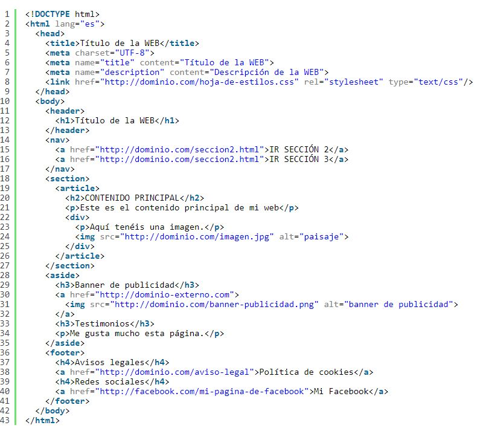

UDRCALI
Estructura basica HTML5
Elementos basicos que contiene una pagina web:
Elementos raiz
DOCTYPE: indica el estandar html
html: representa la raiz de un documentos html
Metadatos
head: colección de metadatos sobre el documento, incluyendo enlaces
a scripts y hojas de estilo
title: titulo del documento la cual se muestra en la barra superior
del navegador .
link: se utiliza para enlazar javaScript y css con el documento html
meta: define los metadatos que no pueden ser
definidos usando otro elemento html
style: etiqueta de estilo usada para escribir css
secciones
body: representa el contenido principal de
un documento html
section: define secciones de una web
nav: define laseccion de un menu de navegación
article: define unidades de contenido
aside: define a bara lateral
h1,h2,h3,h4: se utiliza para el tamaño de la letra
header: define la cabecera de una pagina web
footer: define el pie de pagina
address: define una sección que contiene información de contacto
main: define el contenido principal del documento
